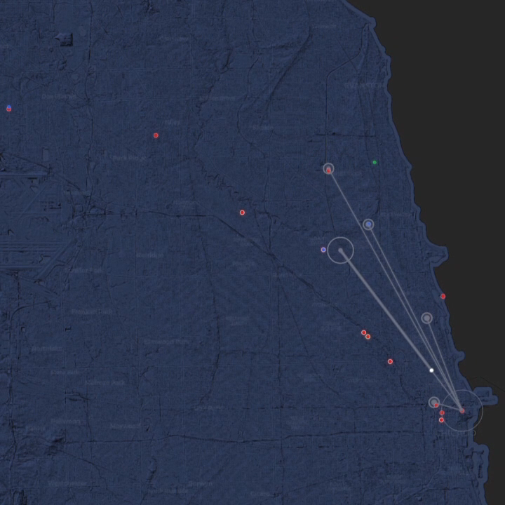

Text when the internet is down.
A local messaging network for Chicago built on long-range radio — no internet, no cell towers, no monthly bill.
Join the Network
Why this exists
When the grid goes down, you're not alone.
Power outages. Storms. Overcrowded events where cell service grinds to a halt. Or you're camping outside coverage and want to stay connected to your group.
Chicago Offline is a messaging network built on MeshCore and LoRa radio. Small devices talk to each other over long-range radio waves — up to several miles — forming a mesh that works when nothing else does.
How it works
Three steps. No tech degree required.
1
Get a LoRa radio device
Small, affordable hardware. About $35.
2
Flash MeshCore firmware
One-click setup. Connects to the mesh automatically.
3
Start messaging
Pair with the app. No account needed.
Live network
The network is live right now.
Real MeshCore devices across Chicago, relaying messages over LoRa radio every day. This isn't a concept — it's running.

—
active devices
—
messages today
—
coverage area
Who it's for
You don't have to be technical.
🧐 Curious people
You saw this and thought "wait, that's a thing?" It is.
🏕️ Outdoors / camping
Stay connected with your group, miles from cell service.
🏘️ Neighborhoods
A block-level network that doesn't need Comcast.
🔦 Emergency prep
When the grid fails, radio still works.
🎪 Event crews
Coordinate at festivals, races, or markets without fighting for bandwidth.
📻 Radio & MeshCore enthusiasts
LoRa mesh networking. A new reason to build and experiment.
Get started
Up and running in minutes.
-
1
Buy a device → Small, affordable radio hardware.
-
2
Set it up → Quick start guide. Takes five minutes.
-
3
You're on the network. Start messaging.
No subscription. No account. The device is yours.